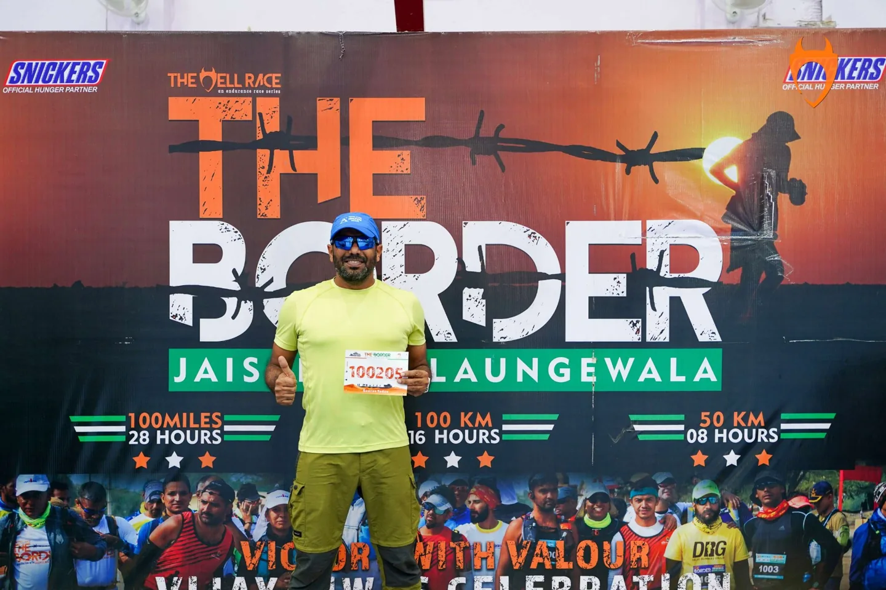

My Athlete Legacy / 03
Ultra Running
Longer distances. Lasting lessons. The milestones behind my endurance journey.
Featured milestone · December 2025
The Border · 100 km
Jaisalmer–Laungewala · 6–7 December 2025
Completed in 15:45:51, with an overall rank of 306 and male category rank of 257, as recorded on the official finisher certificate.
Explore the Border Ultra journeyView race photographs